mistyR and SpatialExperiment/SingleCellExperiment
Ricardo Omar Ramirez Flores
Heidelberg University and Heidelberg University Hospital, Heidelberg, GermanyJovan Tanevski
Heidelberg University and Heidelberg University Hospital, Heidelberg, GermanyJožef Stefan Institute, Ljubljana, Slovenia
jovan.tanevski@uni-heidelberg.de
2023-02-20
Source:vignettes/mistySpatialExperiment.Rmd
mistySpatialExperiment.RmdIntroduction
mistyR can be used to analyze spatial omics data sets stored in SpatialExperiment object with just a couple of functions. In this vignette we demonstrate how to build a user friendly workflow starting from data preprocessing, through running mistyR, to analysis of results, i.e., the spatial interactions between markers stored in alternative assays and specific locations.
The functions provided in this notebook can be adapted to the user
preference but the main objective is to exploit as much as possible the
flexibility of workflow creation from mistyR and object
manipulation from SpatialExperiment
and BiocStyle::Biocpkg("SingleCellExperiment").
# MISTy
library(mistyR)
library(future)
# SpatialExperiment
library(SpatialExperiment)
library(SingleCellExperiment)
library(SummarizedExperiment)
# data manipulation
library(Matrix)
library(tibble)
library(dplyr)
library(purrr)
# normalization
library(sctransform)
# resource
library(progeny)
# plotting
library(ggplot2)
# setup parallel execution
plan(multisession)The skeleton of mistyR pipelines
For user convenience and to facilitate the use of mistyR and SpatialExperiment,
run_misty_spe() is a function describing a general skeleton
of a mistyR workflow for analysing a 10x Visium slide given in a
SpatialExperiment object. The function allows for:
- Defining a number of assays/views to be used in the model.
- Defining the type of spatial context for each view and their parameters.
- Defining the specific assay and features to be used for the view creation of each view.
- Defining the specific spots where the model will be built.
run_misty_spe <- function(slide,
# SpatialExperiment object with spatial omics data.
view.assays,
# Named list of assays for each view.
view.features = NULL,
# Named list of features/markers to use.
# Use all by default.
view.types,
# Named list of the type of view to construct
# from the assay.
view.params,
# Named list with parameters (NULL or value)
# for each view.
spot.ids = NULL,
# spot IDs to use. Use all by default.
out.alias = "results"
# folder name for output
) {
# Extracting geometry
geometry <- as.data.frame(colData(slide)) %>%
select(array_row, array_col)
# Extracting data
view.data <- map(view.assays,
extract_spe_data,
geometry = geometry,
slide = slide
)
# Constructing and running a workflow
build_misty_pipeline(
view.data = view.data,
view.features = view.features,
view.types = view.types,
view.params = view.params,
geometry = geometry,
spot.ids = spot.ids,
out.alias = out.alias
)
}Extracting specific information from SpatialExperiment objects
These are helper functions that allow to extract from SpatialExperiment
objects specific assays and transform them into tibble
which is a preferred format for mistyR.
# Extracts data from an specific assay from a SpatialExperiment object
# and aligns the IDs to the geometry
extract_spe_data <- function(slide,
assay,
geometry) {
data <- altExp(slide, assay) %>%
assay() %>%
t() %>%
as_tibble(rownames = NA)
return(data %>% dplyr::slice(match(rownames(.), rownames(geometry))))
}
# Filters data to contain only features of interest
filter_data_features <- function(data,
features) {
if (is.null(features)) features <- colnames(data)
return(data %>% rownames_to_column() %>%
select(rowname, all_of(features)) %>% rename_with(make.names) %>%
column_to_rownames())
}View creation
This helper function wraps the three options available by default for view creation in mistyR with additional features that allow for creating views for specific spots.
# Builds views depending on the paramaters defined
create_default_views <- function(data,
view.type,
view.param,
view.name,
spot.ids,
geometry) {
view.data.init <- create_initial_view(data)
if (!(view.type %in% c("intra", "para", "juxta"))) {
view.type <- "intra"
}
if (view.type == "intra") {
data.red <- view.data.tmp$data %>%
rownames_to_column() %>%
filter(rowname %in% spot.ids) %>%
select(-rowname)
} else if (view.type == "para") {
view.data.tmp <- view.data.init %>%
add_paraview(geometry, l = view.param)
data.ix <- paste0("paraview.", view.param)
data.red <- view.data.tmp[[data.ix]]$data %>%
mutate(rowname = rownames(data)) %>%
filter(rowname %in% spot.ids) %>%
select(-rowname)
} else if (view.type == "juxta") {
view.data.tmp <- view.data.init %>%
add_juxtaview(
positions = geometry,
neighbor.thr = view.param
)
data.ix <- paste0("juxtaview.", view.param)
data.red <- view.data.tmp[[data.ix]]$data %>%
mutate(rowname = rownames(data)) %>%
filter(rowname %in% spot.ids) %>%
select(-rowname)
}
if (is.null(view.param) == TRUE) {
misty.view <- create_view(
paste0(view.name),
data.red
)
} else {
misty.view <- create_view(
paste0(view.name, "_", view.param),
data.red
)
}
return(misty.view)
}Building a mistyR pipeline and running the model
This wrapper function build_misty_pipeline() allows for
building automatically a mistyR workflow from a
list of data frames, with specified spatial context, parameters,
features and locations.
# Builds automatic MISTy workflow and runs it
build_misty_pipeline <- function(view.data,
view.features,
view.types,
view.params,
geometry,
spot.ids = NULL,
out.alias = "default") {
# Adding all spots ids in case they are not defined
if (is.null(spot.ids)) {
spot.ids <- rownames(view.data[[1]])
}
# First filter the features from the data
view.data.filt <- map2(view.data, view.features, filter_data_features)
# Create initial view
views.main <- create_initial_view(view.data.filt[[1]] %>%
rownames_to_column() %>%
filter(rowname %in% spot.ids) %>% select(-rowname))
# Create other views
view.names <- names(view.data.filt)
all.views <- pmap(list(
view.data.filt[-1],
view.types[-1],
view.params[-1],
view.names[-1]
),
create_default_views,
spot.ids = spot.ids,
geometry = geometry
)
pline.views <- add_views(
views.main,
unlist(all.views, recursive = FALSE)
)
# Run MISTy
run_misty(pline.views, out.alias)
}Basic visualization function
Finally, we adapted the function plotMolecules() from
ggspavis to
visualize features from custom assays for the purposes of the use
case.
plotMolecules_adapted <- function(spe,
molecule = NULL,
x_coord = "array_col",
y_coord = "array_row",
palette = NULL,
alt_assay = "lognorm") {
if (is.null(palette)) {
palette <- "yellow"
}
if (!is.null(palette) && length(palette) == 1) {
palette <- c("black", palette)
}
df_plot <- colData(spe)[, c(x_coord, y_coord), drop = FALSE]
mRNA_counts <-
as.numeric(assay(altExp(spe, alt_assay))[molecule, , drop = FALSE])
stopifnot(length(mRNA_counts) == nrow(df_plot))
df_plot <- cbind(df_plot, expression = mRNA_counts)
df_plot <- as.data.frame(df_plot) %>% mutate(array_row = array_row * -1)
p <- ggplot(
df_plot,
aes_string(x = x_coord, y = y_coord, color = "expression")
) +
geom_point(size = 2.5) +
scale_color_gradient(
low = palette[1],
high = palette[2], trans = "sqrt"
) +
coord_fixed() +
ggtitle(molecule) +
theme_void()
p
}Use case
As an example, we will analyze a 10X Visium spatial gene expression dataset of one breast cancer section (Block A Section 1) available here [https://support.10xgenomics.com/spatial-gene-expression/datasets]. We assume that the required files Feature/cell matrix HDF5 (filtered) and the Spatial imaging data (extracted) are in a folder named ‘breast_A_1’ in the current working directory.
We will explore the spatial interactions of the Hypoxia pathway responsive genes with the Estrogen pathway responsive genes. To this end we will use the model matrix with top significant genes for each pathway from the package progeny and the previously described functions.
Please note that the SpatialExperiment
function read10xVisium() requires a fixed file structure
that we create programmatically for this e xample. Furthermore, in this
example we dropped all repeated symbols, however, the user must define
what’s the best solution for their analysis.
Loading and normalizing the data sets
# Load and normalize using SCT
folder <- "breast_A_1"
#create the required file structure
dir.create(paste0(folder,"/outs"))
file.rename(
from = "breast_A_1/V1_Breast_Cancer_Block_A_Section_1_filtered_feature_bc_matrix.h5",
to = "breast_A_1/outs/filtered_feature_bc_matrix.h5"
)
#> [1] TRUE
file.rename(from = "breast_A_1/spatial", to ="breast_A_1/outs/spatial")
#> [1] TRUE
spe <- read10xVisium(folder, type = "HDF5", data = "filtered",
images = "lowres")
# normalize data
# counts are of class DelayedMatrix which is incompatible with vst
sct.data <- vst(as(counts(spe), "dgCMatrix"), verbosity = 0)$y
# Dropping duplicates
spe <- spe[!duplicated(rowData(spe)), ]
# Getting relevant genes
gene.dict <- as_tibble(rowData(spe), rownames = NA) %>%
rownames_to_column("ENSEMBL") %>%
filter(ENSEMBL %in% rownames(sct.data))
# Re-naming normalized data with gene symbols
sct.data <- sct.data[gene.dict %>% pull("ENSEMBL"), colnames(spe)]
rownames(sct.data) <- gene.dict %>% pull(symbol)Defining Hypoxia and Estrogen responsive genes
For this simple example we will pick the top 15 most significantly
responsive genes of each pathway from the model matrix from the package
progeny.
estrogen.footprints <- getModel(top = 15) %>%
rownames_to_column("gene") %>%
filter(Estrogen != 0, gene %in% slide.markers) %>%
pull(gene)
hypoxia.footprints <- getModel(top = 15) %>%
rownames_to_column("gene") %>%
filter(Hypoxia != 0, gene %in% slide.markers) %>%
pull(gene)Note that for this use case we assume that all normalizations and
assays used by mistyR are defined as alternative
experiments with identical names in the assay and the
experiment.
sct.exp <- SummarizedExperiment(sct.data[slide.markers, ])
assayNames(sct.exp) <- "SCT"
altExp(spe, "SCT") <- sct.expDefining the parameters of the workflow
In this example we will explain the expression of hypoxia responsive genes in terms of three different views:
- Main (intrinsic) view (containing genes to be predicted): intrinsic
expression of
hypoxia.footprints - Paraview - hypoxia genes: expression of hypoxia markers in a significance radius of 10 spots
- Paraview - estrogen genes: expression of estrogen markers in a significance radius of 10 spots
# Define assay for each view
view.assays <- list(
"main" = "SCT",
"para.hypoxia" = "SCT",
"para.estrogen" = "SCT"
)
# Define features for each view
view.features <- list(
"main" = hypoxia.footprints,
"para.hypoxia" = hypoxia.footprints,
"para.estrogen" = estrogen.footprints
)
# Define spatial context for each view
view.types <- list(
"main" = "intra",
"para.hypoxia" = "para",
"para.estrogen" = "para"
)
# Define additional parameters (l in the case of paraview)
view.params <- list(
"main" = NULL,
"para.hypoxia" = 10,
"para.estrogen" = 10
)
misty.out <- "vignette_model_spe"Run MISTy pipeline and collect results
Now that we have preprocessed the data and have decided on a question to analyze, we can create and run a mistyR workflow.
misty.results <- run_misty_spe(
slide = spe,
view.assays = view.assays,
view.features = view.features,
view.types = view.types,
view.params = view.params,
spot.ids = NULL, # Using the whole slide
out.alias = misty.out
) %>%
collect_results()
#>
#> Generating paraview
#>
#> Generating paraview
#>
#> Training models
#>
#> Collecting improvements
#>
#> Collecting contributions
#>
#> Collecting importances
#>
#> AggregatingInterpretation and downstream analysis
MISTy gives explanatory answers to three general questions:
1. How much can the broader spatial context explain the expression of markers (in contrast to the intraview)?
This can be observed in the gain in R2 (or RMSE) of using the
multiview model in contrast to the single main view
model.
misty.results %>%
plot_improvement_stats("gain.R2") %>%
plot_improvement_stats("gain.RMSE")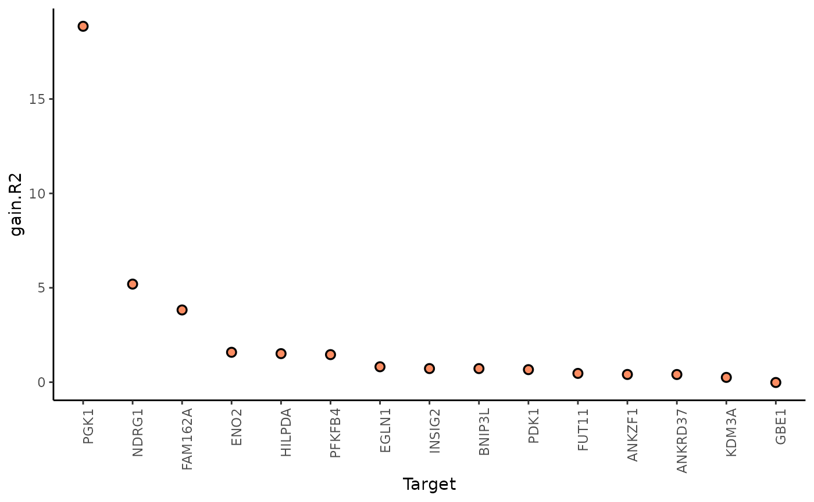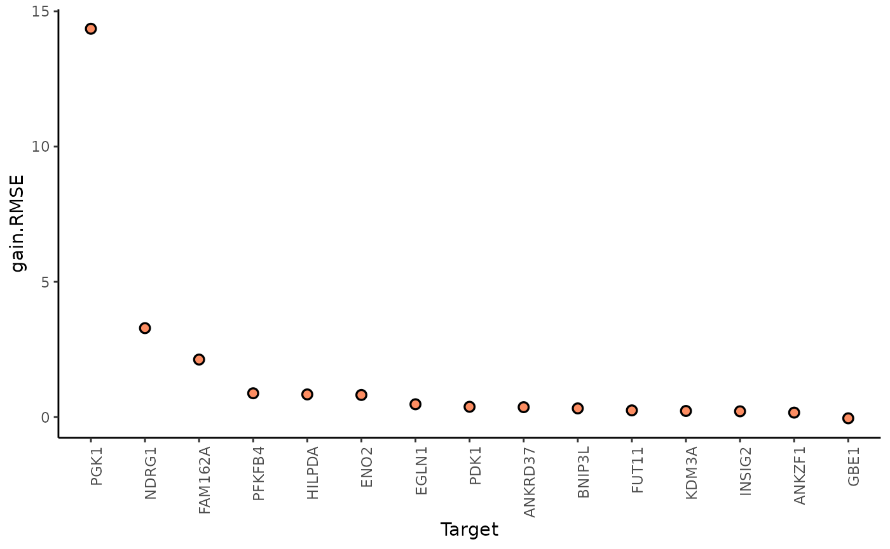
In this example, PGK1 is a marker whose expression can be explained better by modeling the broader spatial context around each spot.
We can further inspect the significance of the gain in variance explained, by the assigned p-value of improvement based on cross-validation.
misty.results$improvements %>%
filter(measure == "p.R2") %>%
arrange(value)
#> # A tibble: 15 × 4
#> target sample measure value
#> <chr> <chr> <chr> <dbl>
#> 1 PGK1 /home/runner/work/mistyR/mistyR/vignettes/vignette_m… p.R2 1.34e-4
#> 2 FUT11 /home/runner/work/mistyR/mistyR/vignettes/vignette_m… p.R2 1.64e-3
#> 3 FAM162A /home/runner/work/mistyR/mistyR/vignettes/vignette_m… p.R2 5.47e-3
#> 4 INSIG2 /home/runner/work/mistyR/mistyR/vignettes/vignette_m… p.R2 1.07e-2
#> 5 PDK1 /home/runner/work/mistyR/mistyR/vignettes/vignette_m… p.R2 1.63e-2
#> 6 HILPDA /home/runner/work/mistyR/mistyR/vignettes/vignette_m… p.R2 2.48e-2
#> 7 ANKZF1 /home/runner/work/mistyR/mistyR/vignettes/vignette_m… p.R2 2.66e-2
#> 8 NDRG1 /home/runner/work/mistyR/mistyR/vignettes/vignette_m… p.R2 4.28e-2
#> 9 EGLN1 /home/runner/work/mistyR/mistyR/vignettes/vignette_m… p.R2 8.93e-2
#> 10 PFKFB4 /home/runner/work/mistyR/mistyR/vignettes/vignette_m… p.R2 1.14e-1
#> 11 KDM3A /home/runner/work/mistyR/mistyR/vignettes/vignette_m… p.R2 1.71e-1
#> 12 BNIP3L /home/runner/work/mistyR/mistyR/vignettes/vignette_m… p.R2 1.74e-1
#> 13 ENO2 /home/runner/work/mistyR/mistyR/vignettes/vignette_m… p.R2 1.77e-1
#> 14 ANKRD37 /home/runner/work/mistyR/mistyR/vignettes/vignette_m… p.R2 1.77e-1
#> 15 GBE1 /home/runner/work/mistyR/mistyR/vignettes/vignette_m… p.R2 6.48e-1In general, the significant gain in R2 can be interpreted as the following:
“We can better explain the expression of marker X, when we consider additional views, other than the intrinsic view.”
2.How much do different view components contribute to explaining the expression?
misty.results %>% plot_view_contributions()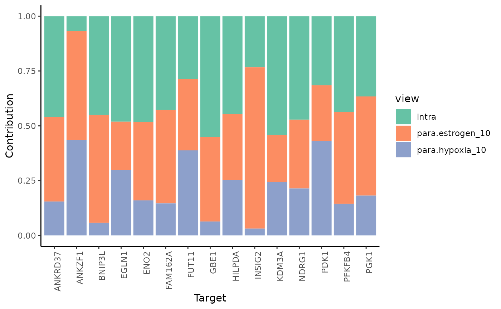
misty.results$contributions.stats %>% filter(target == "PGK1")
#> # A tibble: 3 × 6
#> target view mean fraction p.mean p.sd
#> <chr> <chr> <dbl> <dbl> <dbl> <dbl>
#> 1 PGK1 intra 0.486 0.367 0 NA
#> 2 PGK1 para.estrogen_10 0.597 0.452 0 NA
#> 3 PGK1 para.hypoxia_10 0.239 0.181 9.73e-10 NAIn the case of PGK1, we observe that around 37% of the contribution in the final model comes from the expression of other markers of hypoxia intrinsically or from the broader tissue structure. The rest (63%) comes from the expression of estrogen and hypoxia responsive genes from the broader tissue structure.
3.What are the specific relations that can explain the contributions?
To explain the contributions, we can visualize the importances of markers coming from each view separately as predictors of the expression of the intrinsic markers of hypoxia.
First, the intrinsic importances of the hypoxia markers.
misty.results %>% plot_interaction_heatmap(view = "intra")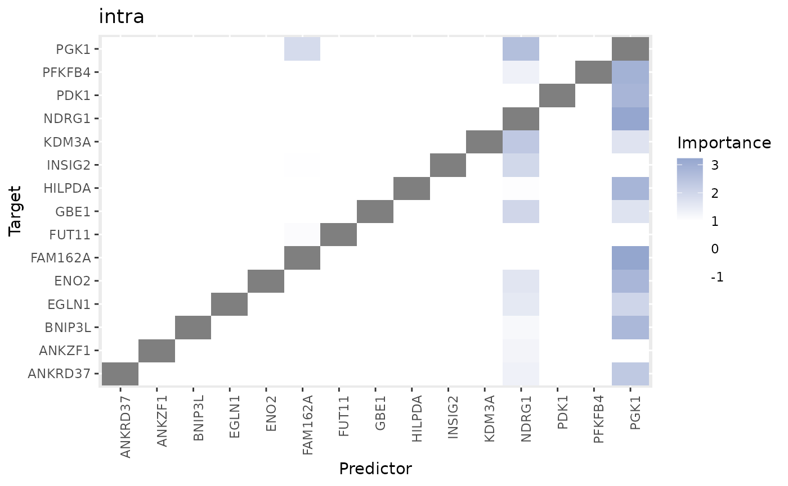
These importances are associated to the relationship between markers in the same spot. Let’s pick the best predictor of PGK1 to confirm this:
misty.results$importances.aggregated %>%
filter(view == "intra", Target == "PGK1") %>%
arrange(-Importance)
#> # A tibble: 15 × 5
#> view Predictor Target Importance nsamples
#> <chr> <chr> <chr> <dbl> <int>
#> 1 intra NDRG1 PGK1 2.57 1
#> 2 intra FAM162A PGK1 1.87 1
#> 3 intra PFKFB4 PGK1 0.265 1
#> 4 intra HILPDA PGK1 0.204 1
#> 5 intra ENO2 PGK1 -0.00680 1
#> 6 intra EGLN1 PGK1 -0.342 1
#> 7 intra GBE1 PGK1 -0.466 1
#> 8 intra ANKRD37 PGK1 -0.471 1
#> 9 intra KDM3A PGK1 -0.526 1
#> 10 intra INSIG2 PGK1 -0.526 1
#> 11 intra BNIP3L PGK1 -0.543 1
#> 12 intra ANKZF1 PGK1 -0.626 1
#> 13 intra PDK1 PGK1 -0.701 1
#> 14 intra FUT11 PGK1 -0.702 1
#> 15 intra PGK1 PGK1 NA 1
plotMolecules_adapted(spe,
molecule = "PGK1",
x_coord = "array_col",
y_coord = "array_row",
alt_assay = "SCT"
)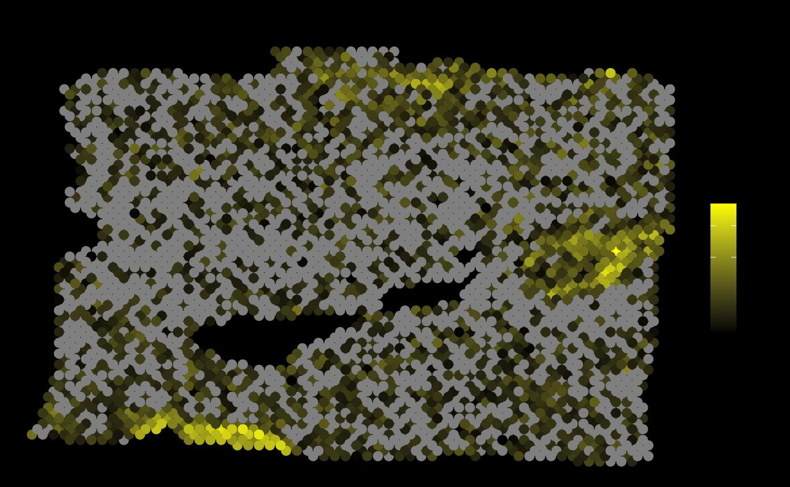
plotMolecules_adapted(spe,
molecule = "NDRG1",
x_coord = "array_col",
y_coord = "array_row",
alt_assay = "SCT"
)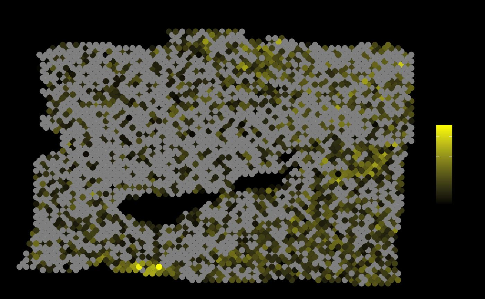
Second, the paraview importances of the hypoxia markers.
misty.results %>% plot_interaction_heatmap(view = "para.hypoxia_10")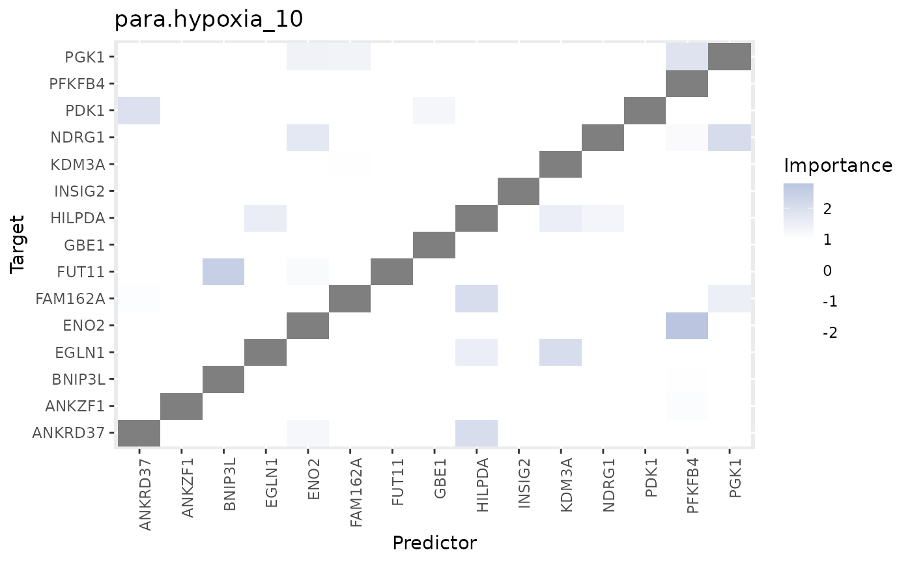
These importances are associated to the relationship between markers in the spot and markers in the neighborhood (controlled by our parameter l).
plotMolecules_adapted(spe,
molecule = "PGK1",
x_coord = "array_col",
y_coord = "array_row",
alt_assay = "SCT"
)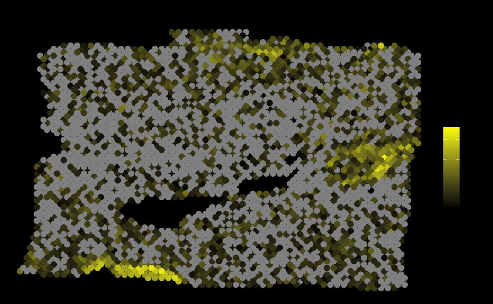
plotMolecules_adapted(spe,
molecule = "PFKFB4",
x_coord = "array_col",
y_coord = "array_row",
alt_assay = "SCT"
)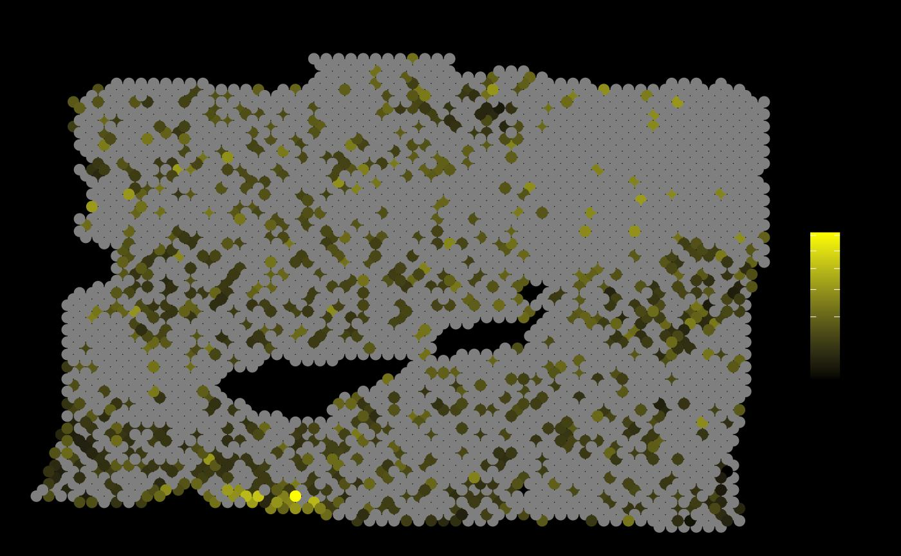
As expected, the expression of PFKFB4 (the best predictor from this view) in the neighborhood of each spot allows to explain the expression of PGK1.
Finally, the paraview importances of the estrogen markers. We will inspect the best predictor in this view.
misty.results %>% plot_interaction_heatmap(view = "para.estrogen_10")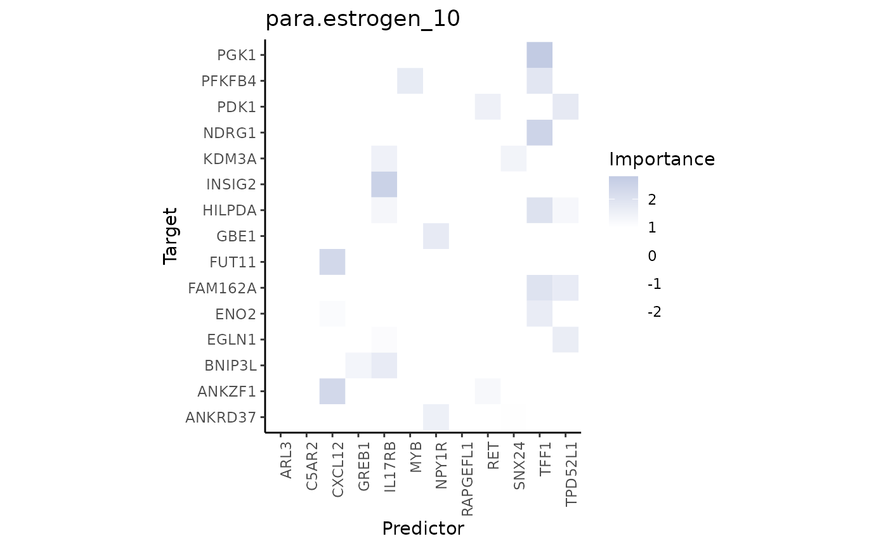
plotMolecules_adapted(spe,
molecule = "PGK1",
x_coord = "array_col",
y_coord = "array_row",
alt_assay = "SCT"
)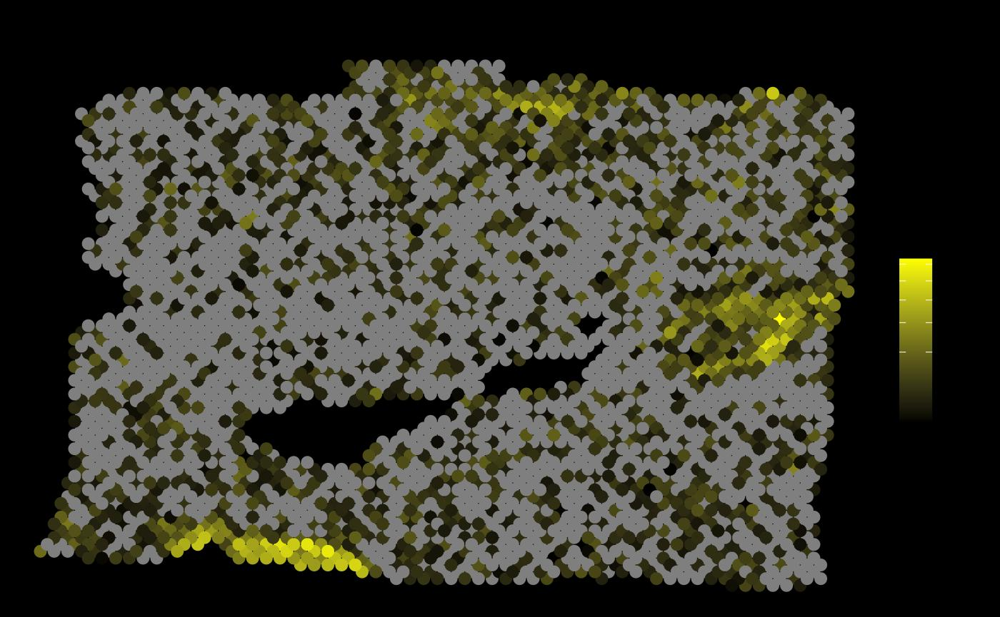
plotMolecules_adapted(spe,
molecule = "TPD52L1",
x_coord = "array_col",
y_coord = "array_row",
alt_assay = "SCT"
)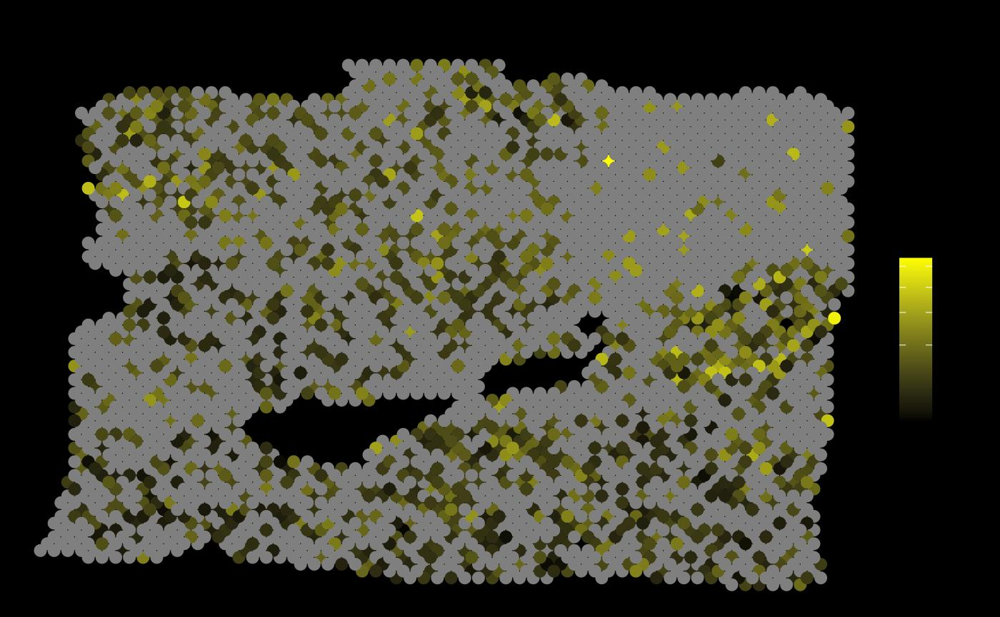
It is visible that in some areas the local expression of TPD52L1 overlaps with the areas with the highest expression of PGK1.
Other use cases
The shown example is not the only way to use mistyR to analyze spatial transcriptomics data. Similar and complementary workflows can be constructed to describe different aspects of biology, for example:
Spatial interactions between pathway activities and putative ligands, as shown here.
Spatial interactions between cell-state lineage markers and putative ligands, as shown here.
Spatial interactions between cell-type abundances leveraging deconvolution methods and creating descriptions of cell colocalization and tissue architecture.
Additionally, mistyR through the
function collect_results() allows you to group the results
of multiple slides, allowing for a more robust, integrative or
comparative analysis of spatial interactions.
See also
Publication
Jovan Tanevski, Ricardo Omar Ramirez Flores, Attila Gabor, Denis Schapiro, Julio Saez-Rodriguez. Explainable multiview framework for dissecting spatial relationships from highly multiplexed data. Genome Biology 23, 97 (2022). https://doi.org/10.1186/s13059-022-02663-5
Session info
Here is the output of sessionInfo() at the point when
this document was compiled:
#> R version 4.2.2 (2022-10-31)
#> Platform: x86_64-pc-linux-gnu (64-bit)
#> Running under: Ubuntu 20.04.5 LTS
#>
#> Matrix products: default
#> BLAS: /usr/lib/x86_64-linux-gnu/blas/libblas.so.3.9.0
#> LAPACK: /usr/lib/x86_64-linux-gnu/lapack/liblapack.so.3.9.0
#>
#> locale:
#> [1] LC_CTYPE=C.UTF-8 LC_NUMERIC=C LC_TIME=C.UTF-8
#> [4] LC_COLLATE=C.UTF-8 LC_MONETARY=C.UTF-8 LC_MESSAGES=C.UTF-8
#> [7] LC_PAPER=C.UTF-8 LC_NAME=C LC_ADDRESS=C
#> [10] LC_TELEPHONE=C LC_MEASUREMENT=C.UTF-8 LC_IDENTIFICATION=C
#>
#> attached base packages:
#> [1] stats4 stats graphics grDevices utils datasets methods
#> [8] base
#>
#> other attached packages:
#> [1] ggplot2_3.4.1 progeny_1.20.0
#> [3] sctransform_0.3.5 purrr_1.0.1
#> [5] dplyr_1.1.0 tibble_3.1.8
#> [7] Matrix_1.5-1 SpatialExperiment_1.8.0
#> [9] SingleCellExperiment_1.20.0 SummarizedExperiment_1.28.0
#> [11] Biobase_2.58.0 GenomicRanges_1.50.2
#> [13] GenomeInfoDb_1.34.9 IRanges_2.32.0
#> [15] S4Vectors_0.36.1 BiocGenerics_0.44.0
#> [17] MatrixGenerics_1.10.0 matrixStats_0.63.0
#> [19] future_1.31.0 mistyR_1.6.1
#> [21] BiocStyle_2.26.0
#>
#> loaded via a namespace (and not attached):
#> [1] colorspace_2.1-0 rjson_0.2.21
#> [3] rprojroot_2.0.3 scuttle_1.8.4
#> [5] XVector_0.38.0 fs_1.6.1
#> [7] listenv_0.9.0 furrr_0.3.1
#> [9] farver_2.1.1 ggrepel_0.9.3
#> [11] fansi_1.0.4 codetools_0.2-18
#> [13] R.methodsS3_1.8.2 sparseMatrixStats_1.10.0
#> [15] cachem_1.0.6 knitr_1.42
#> [17] rlist_0.4.6.2 jsonlite_1.8.4
#> [19] R.oo_1.25.0 HDF5Array_1.26.0
#> [21] BiocManager_1.30.19 compiler_4.2.2
#> [23] dqrng_0.3.0 assertthat_0.2.1
#> [25] fastmap_1.1.0 limma_3.54.1
#> [27] cli_3.6.0 htmltools_0.5.4
#> [29] tools_4.2.2 gtable_0.3.1
#> [31] glue_1.6.2 GenomeInfoDbData_1.2.9
#> [33] reshape2_1.4.4 Rcpp_1.0.10
#> [35] jquerylib_0.1.4 pkgdown_2.0.7
#> [37] vctrs_0.5.2 rhdf5filters_1.10.0
#> [39] DelayedMatrixStats_1.20.0 xfun_0.37
#> [41] stringr_1.5.0 globals_0.16.2
#> [43] beachmat_2.14.0 lifecycle_1.0.3
#> [45] edgeR_3.40.2 zlibbioc_1.44.0
#> [47] MASS_7.3-58.1 scales_1.2.1
#> [49] ragg_1.2.5 parallel_4.2.2
#> [51] rhdf5_2.42.0 RColorBrewer_1.1-3
#> [53] yaml_2.3.7 memoise_2.0.1
#> [55] gridExtra_2.3 sass_0.4.5
#> [57] stringi_1.7.12 highr_0.10
#> [59] distances_0.1.9 desc_1.4.2
#> [61] filelock_1.0.2 BiocParallel_1.32.5
#> [63] rlang_1.0.6 pkgconfig_2.0.3
#> [65] systemfonts_1.0.4 bitops_1.0-7
#> [67] evaluate_0.20 lattice_0.20-45
#> [69] Rhdf5lib_1.20.0 labeling_0.4.2
#> [71] tidyselect_1.2.0 parallelly_1.34.0
#> [73] plyr_1.8.8 magrittr_2.0.3
#> [75] bookdown_0.32 R6_2.5.1
#> [77] magick_2.7.3 generics_0.1.3
#> [79] DelayedArray_0.24.0 pillar_1.8.1
#> [81] withr_2.5.0 RCurl_1.98-1.10
#> [83] future.apply_1.10.0 DropletUtils_1.18.1
#> [85] utf8_1.2.3 rmarkdown_2.20
#> [87] locfit_1.5-9.7 grid_4.2.2
#> [89] data.table_1.14.8 digest_0.6.31
#> [91] tidyr_1.3.0 R.utils_2.12.2
#> [93] textshaping_0.3.6 munsell_0.5.0
#> [95] bslib_0.4.2